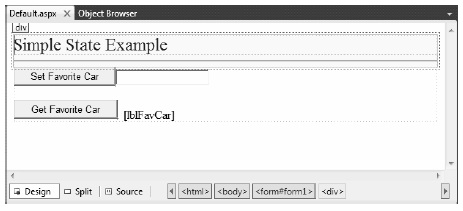

At the beginning of the Chapter 32, I pointed out that HTTP on the Web results in a stateless wire protocol. This very fact makes web development extremely different from the process of building an executable assembly. For example, when you are building a Windows Forms application, you can rest assured that any member variables defined in the Form-derived class will typically exist in memory until the user explicitly shuts down the executable:
public partial class MainWindow : Form { // State data! private string userFavoriteCar = "Yugo"; }
In the World Wide Web environment, however, you are not afforded the same luxurious assumption. To prove the point, create a new Empty Web Site project named SimpleStateExample and insert a new Web Form. In the code-behind file of your *.aspx file, define a page-level string variable named userFavoriteCar:
public partial class _Default : System.Web.UI.Page { // State data? private string userFavoriteCar = "Yugo"; protected void Page_Load(object sender, EventArgs e) { } }
Next, construct the web UI as shown in Figure 34-1.
Figure 34-1 The UI for the simple state page
The server-side Click event handler for the Set button (named btnSetCar) allows the user to assign the string member variable to the value within the TextBox (named txtFavCar):
protected void btnSetCar_Click(object sender, EventArgs e) { // Store fave car in member variable. userFavoriteCar = txtFavCar.Text; }
The Click event handler for the Get button (btnGetCar) displays the current value of the member variable within the page’s Label widget (lblFavCar):
protected void btnGetCar_Click(object sender, EventArgs e) { // Show value of member variable. lblFavCar.Text = userFavoriteCar; }
Now, if you were building a Windows Forms application, you would be right to assume that once the user sets the initial value, it would be remembered throughout the life of the desktop application. Sadly, when you run this web application, you find that each time you post back to the web server (by clicking either button), the value of the userFavoriteCar string variable is set back to the initial value of “Yugo”; therefore, the Label’s text is continuously fixed.
Again, given that HTTP has no clue how to automatically remember data once the HTTP response has been sent, it stands to reason that the Page object is destroyed almost instantly. As a result, when the client posts back to the *.aspx file, a new Page object is constructed that will reset any page-level member variables. This is clearly a major issue. Imagine how useless online shopping would be if every time you posted back to the web server, any and all information you previously entered (such as the items you wished to purchase) were discarded. When you wish to remember information regarding the users who are logged on to your site, you need to make use of various state management techniques.
Note This issue is in no way limited to ASP.NET. Java web applications, CGI applications, classic ASP applications, and PHP applications all must contend with the thorny issue of state management.
To remember the value of the userFavoriteCar string type between postbacks, one approach is to store the value of this string type in a session variable. We will examine the details of session state in the pages that follow. For the sake of completion, however, here are the necessary updates for the current page (note that you are no longer using the private string member variable, so feel free to comment out or remove the definition altogether):
public partial class _Default : System.Web.UI.Page { // State data? // private string userFavoriteCar = "Yugo"; protected void Page_Load(object sender, EventArgs e) { } protected void btnSetCar_Click(object sender, EventArgs e) { // Store value to be remembered in session variable. Session["UserFavCar"] = txtFavCar.Text; } protected void btnGetCar_Click(object sender, EventArgs e) { // Get session variable value. lblFavCar.Text = (string)Session["UserFavCar"]; } }
If you now run the application, the value of your favorite automobile will be preserved across postbacks, thanks to the HttpSessionState object manipulated indirectly by the inherited Session property.
Source Code The SimpleStateExample web site is included under the Chapter 34 subdirectory.